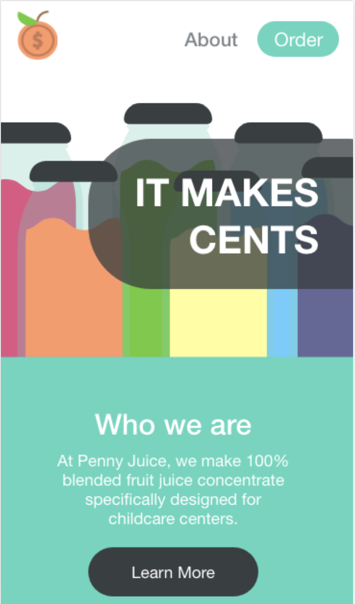
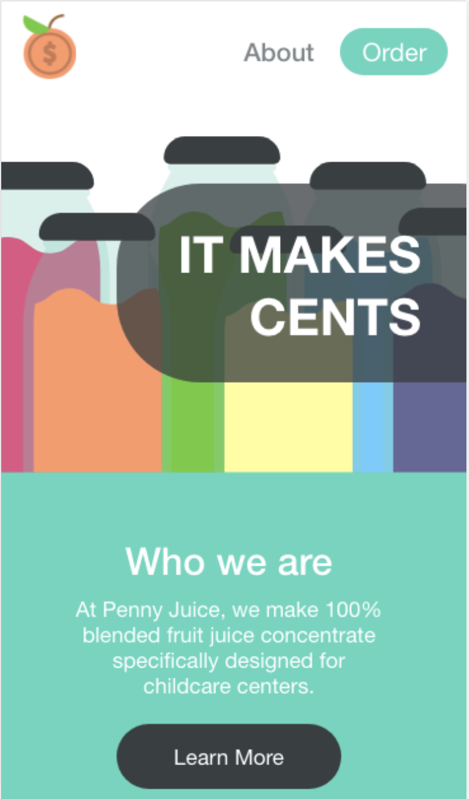

For a project in Interaction Design, we were required to pick a website and redesign it. I
decided to go with pennyjuice.com.
We had to redesign the home page and one other page.
For this design, I knew it was mainly for people who were working with children. I made the
colors seem "fresh", and I made the font a bit more sleek. While the juice is for the
children, the site is meant to be catered towards the adults potentially buying the juice.
 
